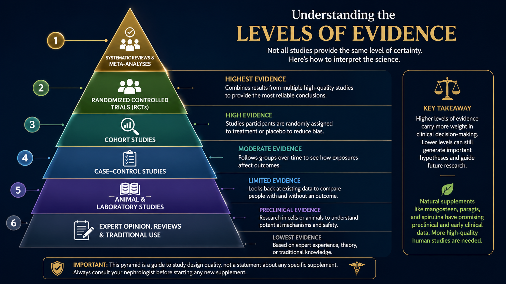
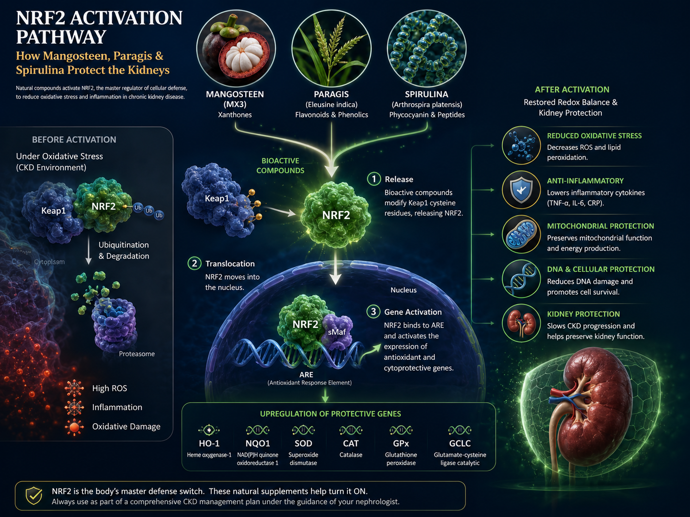
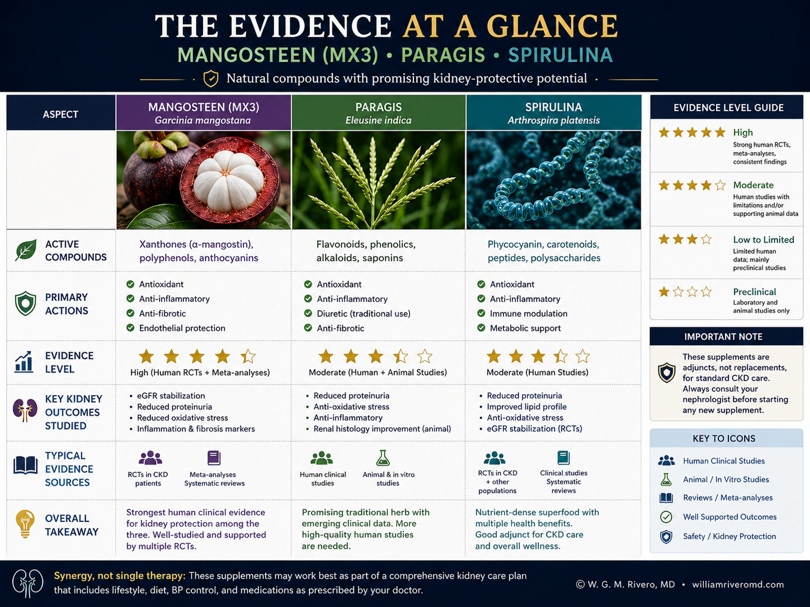
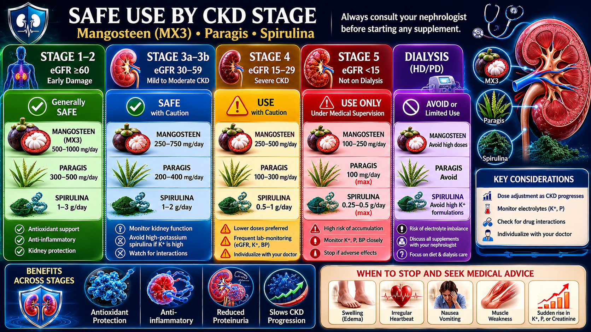
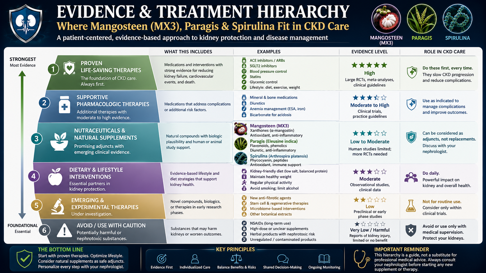

Three Supplements Commonly Recommended in the Philippines for Kidney Problems
Here is what each one actually is — before we discuss what the science says.
Active compounds: Alpha-, beta-, and gamma-mangostin — polyphenols called xanthones. Each capsule contains 500 mg of standardized pericarp extract.
Philippine FDA status: Registered food supplement (FR-4000009668333). No therapeutic claim permitted.
How consumed: 1 capsule twice daily; excipients include magnesium stearate and gelatin capsule.
Active compounds: Vitexin, isovitexin, schaftoside (flavonoids); β-sitosterol; alkaloids; tannins; saponins; cardiac glycosides.
Philippine FDA status: Not registered as a drug or food supplement. Consumed as home-boiled tea decoction.
How consumed: 20g washed leaves/stems boiled in 1 L water for 10 min; strained; 1–2 cups daily.
Active compounds: C-phycocyanin (key pigment-protein); phycocyanobilin; gamma-linolenic acid; β-carotene; zeaxanthin. Also ~60–70% protein by dry weight.
Philippine FDA status: Various brands registered as food supplements; quality varies by manufacturer.
How consumed: 1–10g/day as powder or capsule; typically added to juice or water.
Evidence Levels: From Test Tube to Human Trial
Most research on these supplements comes from animal experiments or laboratory (in vitro) studies — not from clinical trials in human kidney patients. The distinction matters enormously in medicine.

Alpha-mangostin activates the Nrf2 pathway — a cellular master switch for antioxidant and anti-inflammatory enzyme production (HO-1, NQO1, SOD, GPx). In preclinical AKI models, it significantly reduced serum creatinine, BUN, MDA, and ROS. Network pharmacology identified 10 hub targets including TNF, AKT1, NF-κB1, HIF-1A, and IL-6. One human RCT in healthy adults showed CRP reduction over 30 days; kidney function tests were unchanged. No human trial in CKD patients exists.[1,2,3]
| Claim | Evidence Level | Notes |
|---|---|---|
| Antioxidant / anti-inflammatory effect | Preclinical + Limited Human (Healthy) | CRP ↓ in healthy adults; no CKD RCTs[3] |
| Reduces AKI kidney injury markers | Animal Models Only | Creatinine, BUN, MDA ↓ in rat models[1] |
| Slows CKD progression | No Human Evidence | Biologically plausible; untested in humans |
| Prevents or delays hemodialysis | No Evidence | Marketing claim without clinical basis |
Vitexin and isovitexin are flavone C-glycosides with anti-inflammatory and antioxidant activity. Ethanolic extract increased urine output and electrolyte excretion (diuretic effect) and dissolved calcium oxalate crystals in animal models. No clinical trial in humans with any kidney disease has been completed. The Philippine Institute of Traditional and Alternative Health Care (PITAHC) formally states paragis cannot be claimed as a definitive treatment for any disease.[4,5,6]
| Claim | Evidence Level | Notes |
|---|---|---|
| Diuretic (increases urine flow) | Animal Studies Only | Ethanolic extract vs. furosemide in rats[4] |
| Dissolves calcium oxalate kidney stones | Animal Studies Only | In vitro calcium oxalate dissolution[5] |
| Anti-inflammatory / antioxidant | Animal Studies Only | Vitexin, isovitexin activity confirmed[6] |
| Slows CKD progression | No Evidence | PITAHC: no human RCT completed |
| Prevents or delays hemodialysis | No Evidence | Viral social media claim; no scientific basis |
C-phycocyanin (CPC) is the lead bioactive compound. It activates Nrf2 and modulates the angiotensin receptor balance (↑Mas receptor, ↓AT1) — directly relevant to CKD hemodynamics and fibrosis. In a rat 5/6 nephrectomy CKD model, spirulina reduced hypertension, left ventricular hypertrophy, renal dysfunction, and oxidative stress.[7,8] A 2024–2026 systematic review confirmed significant improvements in creatinine, urea, uric acid, and BP in preclinical studies.[9] Human trials in HD patients showed improvements in hemoglobin, albumin, WBC, and uric acid.[10]
| Claim | Evidence Level | Notes |
|---|---|---|
| Antioxidant / anti-inflammatory | Human RCTs Positive | CRP, IL-6, MDA ↓ in multiple trials[10,11] |
| Improved hemoglobin & albumin (HD patients) | Preliminary Human Data | WCN 2023 controlled study[10] |
| Cholesterol and blood sugar improvement | Human RCTs Positive | LDL ↓, HbA1c ↓ in metabolic syndrome trials |
| Slows CKD progression | Preclinical Strong; Human Insufficient | Animal CKD models compelling; human trials lacking[7,8,9] |
| Prevents or delays hemodialysis | No Clinical Trial Evidence | No RCT in CKD progression has been completed |

Figure 1. Nrf2 pathway — how xanthones and C-phycocyanin protect kidney cells.

Figure 2. Comparative evidence strength across supplement types.
What Patients Ask Most
🩺 Supplement Safety Symptom Checker
If you are currently taking any of these supplements, check any symptoms you have noticed since starting. This tool gives preliminary guidance only — it does not replace clinical evaluation.
Risk and Benefit by CKD Stage
Risk and benefit differ significantly depending on your CKD stage. Always confirm with your nephrologist before starting anything. CKD stage is determined by your eGFR (estimated kidney filtration rate) from a blood test.

🟢 CKD Stages 1–3a (eGFR > 45)
- MX3: Low risk at standard dose (500 mg BID). Biologically plausible antioxidant benefit. Acceptable as adjunct — never primary treatment.
- Paragis: Not recommended. Cardiac glycoside content, unquantified mineral load in home decoctions. Requires physician supervision at minimum.
- Spirulina: 1–2g/day from a heavy-metal-tested brand is reasonable. Monitor uric acid and potassium at 4–8 weeks.
🟡 CKD Stages 3b–4 (eGFR 15–44)
- MX3: Acceptable with monitoring. Watch bleeding risk if on antiplatelet drugs (clopidogrel, aspirin).
- Paragis: Not recommended. Diuretic effect can precipitate AKI-on-CKD. Cardiac glycoside toxicity is amplified when hyperkalemia is present.
- Spirulina: Caution. Protein and purine load worsen uremia and hyperuricemia. Dietitian review required before use.
🔴 CKD Stage 5, Pre-Dialysis (eGFR < 15)
- MX3: Small doses may be acceptable; avoid high-dose long-term without physician oversight.
- Paragis: Contraindicated. No demonstrated benefit; significant hyperkalemia, AKI, and cardiac glycoside accumulation risk.
- Spirulina: Generally not recommended. Protein and mineral load poorly tolerated at near-ESKD stage.
🔵 On Hemodialysis (CKD Stage 5D)
- MX3: Generally acceptable. Monitor for interactions with antiplatelet drugs used in vascular access care.
- Paragis: Not recommended. Cardiac glycoside risk is amplified by inter-dialytic electrolyte fluctuations.
- Spirulina: The equation changes here. HD patients are often protein-depleted and inflamed. 1–2g/day under dietitian + nephrologist supervision may be beneficial. Monitor K⁺ and phosphorus at each pre-dialysis draw.
Red Flag Symptoms After Starting a Supplement
⛔ Do Not Wait for Your Next Appointment
- Decreased urine output after starting any supplement — may signal AKI or worsening CKD
- Leg swelling, sudden weight gain of >1 kg/day, or shortness of breath — fluid retention worsening
- Muscle weakness, irregular heartbeat, or palpitations — possible hyperkalemia (high potassium), especially with paragis
- Unusual bleeding (bruising, bleeding gums, dark stools) — anticoagulant interaction with MX3 or paragis
- Nausea, vomiting, or confusion — possible uremic worsening from protein/purine load in spirulina
- Skin rash, hives, or lip/throat swelling — allergic reaction; stop supplement immediately and go to emergency
- Your kidney function (creatinine, BUN, eGFR) worsens at the next lab check after starting a supplement
Important: Any deterioration of kidney function within weeks of starting a new supplement should prompt immediate discontinuation and physician review. Correlation is not proof of cause — but your kidneys should not get worse while you are trying to protect them.
Proven Therapies vs. Supplements
The path away from dialysis runs through proven therapies. The following interventions have Level A evidence from large randomized controlled trials for slowing CKD progression. Supplements may play a supportive adjunct role alongside these — never instead of them.

| Intervention | Evidence Grade | Effect on Kidneys |
|---|---|---|
| SGLT2 inhibitors (dapagliflozin / empagliflozin) | 🏆 Level A — DAPA-CKD, EMPA-KIDNEY trials | Reduces hyperfiltration, inflammation, fibrosis; slows eGFR decline regardless of diabetes presence |
| ACE inhibitors / ARBs (telmisartan, irbesartan, perindopril) | 🏆 Level A — Multiple RCTs | Reduces intraglomerular pressure, proteinuria, and glomerulosclerosis |
| Blood pressure control (target <130/80 mmHg) | 🏆 Level A — SPRINT CKD subgroup | Every 10 mmHg sustained reduction meaningfully cuts progression risk |
| Blood sugar control in diabetes (HbA1c 7–8% for CKD) | 🏆 Level A — ACCORD, UKPDS | Prevents diabetic nephropathy and slows progression once established |
| Dietary protein restriction (0.6–0.8g/kg/day, non-dialysis) | ✅ Level B — MDRD Study | Reduces uremic toxin load and glomerular hyperfiltration |
| Uric acid lowering (febuxostat 80mg OD; target UA <6.0 mg/dL) | ✅ Level B — PERL, FEATHER trials | Urate crystal deposition injures tubules; lowering UA is nephroprotective |
| Finerenone (diabetic CKD with proteinuria) | 🏆 Level A — FIDELIO-DKD, FIGARO-DKD | Non-steroidal mineralocorticoid receptor blockade reduces fibrosis and CV events |
| Spirulina (low-dose adjunct in appropriate CKD stages) | ⚠️ Preclinical Strong; Human Preliminary | Anti-inflammatory and antioxidant support; not disease-modifying by current evidence |
| MX3 / Mangosteen Xanthone | ⚠️ Preclinical Only for CKD | Antioxidant support; no CKD human trials; cannot replace proven therapies |
| Paragis / Eleusine indica | ❌ Preclinical Animal Only; Safety Concerns | No demonstrated benefit in kidney disease; cardiac glycoside and diuretic risks in CKD |
References
All references are peer-reviewed unless otherwise noted. PITAHC references are from official Philippine government communications.
- Chatatikun M, et al. The nephroprotective effects of alpha-mangostin for acute kidney injury: A systematic review and meta-analysis. Antioxidants. 2025;14(11):1374. doi:10.3390/antiox14111374
- Ramirez-Cisneros MA, et al. Integrative network pharmacology and molecular docking analysis uncovers multi-target mechanisms of alpha-mangostin against acute kidney injury. Foods. 2026;15(7):1270. doi:10.3390/foods15071270
- Xie Z, et al. Randomized, double-blind, placebo-controlled trial of mangosteen-based beverage in healthy adults: antioxidant capacity and CRP. Cited in Antioxidants 2025;14:1374 [Ref 66].
- Gruyal GR, et al. Phytochemical study of Eleusine indica for diuretic and anti-urolithic effects. World Journal of Pharmaceutical Research. 2018.
- Amoah SKS, et al. Antiurolithiatic activity of ethanolic extract of Eleusine indica. Asia Pacific Journal of Allied Health Sciences. 2018;1.
- Sukor R, et al. Eleusine indica for food and medicine: phytochemistry review. ResearchGate. 2021. doi:10.13140/RG.2.2.24571.34083
- Memije-Lazaro IN, et al. Arthrospira maxima (Spirulina) and C-phycocyanin prevent the progression of chronic kidney disease and its cardiovascular complications. Journal of Functional Foods. 2018;43:37–43. doi:10.1016/j.jff.2018.01.028
- Xanthones protects lead-induced chronic kidney disease (CKD) via activating Nrf-2 and modulating NF-kB, MAPK pathway. Toxicology Reports. 2019. doi:10.1016/j.toxrep.2019.11.009
- Guerreiro ICS, et al. Can Arthrospira (Spirulina) sp. be used to protect the kidneys and prevent hypertension? A systematic review and meta-analysis of preclinical studies. Journal of Functional Foods. 2026. doi:10.1016/j.jff.2026.01.001
- Nazari Taloki F, et al. Spirulina supplementation in hemodialysis patients: oxidative profile, hemoglobin, albumin, and uric acid outcomes. WCN23-0541 abstract. Kidney International Reports. 2023. doi:10.1016/j.ekir.2023.02.622
- Mousavi S, et al. Spirulina supplementation and its effects on inflammation and oxidative stress: a systematic review and meta-analysis on randomized clinical trials. Journal of Functional Foods. 2025;131:106945. doi:10.1016/j.jff.2025.106945
- Sackett DL, et al. Evidence-Based Medicine: How to Practice and Teach EBM. 2nd ed. Churchill Livingstone; 2000.
- National Kidney Foundation. Vitamins and Chronic Kidney Disease, Dialysis, & Transplant: Safe Choices and Risks. Updated May 2026. Available: kidney.org
- Philippine Food and Drug Administration. Food Supplement Registration Verification. verification.fda.gov.ph. Accessed May 2026.
- Wikipedia contributors. Spirulina (dietary supplement) — Mineral composition per 100g. Wikipedia, The Free Encyclopedia. [USDA FoodData Central source data]
- Philippine Institute of Traditional and Alternative Health Care (PITAHC), DOH Philippines. Official position statement on Eleusine indica (Paragis): pre-clinical evidence only; no large-scale human clinical trial completed. 2023.
- KDIGO 2024 CKD Clinical Practice Guideline Update. Kidney International Supplements. 2024. doi:10.1016/j.kisu.2023.11.001
- Heerspink HJL, et al. Dapagliflozin in patients with chronic kidney disease. NEJM. 2020;383:1436–1446.
- The EMPA-KIDNEY Collaborative Group. Empagliflozin in patients with chronic kidney disease. NEJM. 2023;388:117–127.
- Bakris GL, et al. Effect of finerenone on chronic kidney disease outcomes in type 2 diabetes. NEJM. 2020;383:2219–2229.